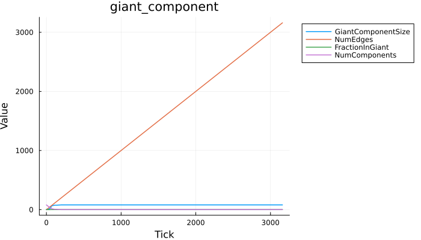
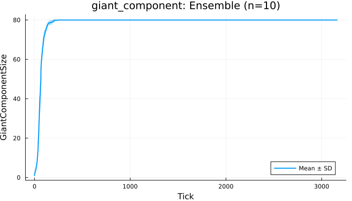
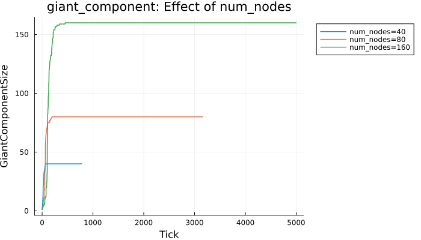

Giant Component
Overview
WHAT IS IT?
In a network, a “component” is a group of nodes (people) that are all connected to each other, directly or indirectly. So if a network has a “giant component”, that means almost every node is reachable from almost every other. This model shows how quickly a giant component arises if you grow a random network.
HOW IT WORKS
Initially we have nodes but no connections (edges) between them. At each step, we pick two nodes at random which were not directly connected before and add an edge between them. All possible connections between them have exactly the same probability of occurring.
As the model runs, small chain-like “components” are formed, where the members in each component are either directly or indirectly connected to each other. If an edge is created between nodes from two different components, then those two components merge into one. The component with the most members at any given point in time is the “giant” component and it is colored red. (If there is a tie for largest, we pick a random component to color.)
THINGS TO NOTICE
The y-axis of the plot shows the fraction of all nodes that are included in the giant component. The x-axis shows the average number of connections per node. The vertical line on the plot shows where the average number of connections per node equals 1. What happens to the rate of growth of the giant component at this point?
The model demonstrates one of the early proofs of random graph theory by the mathematicians Paul Erdos and Alfred Renyi (1959). They showed that the largest connected component of a network formed by randomly connecting two existing nodes per time step, rapidly grows after the average number of connections per node equals 1. In other words, the average number of connections has a “critical point” where the network undergoes a “phase transition” from a rather unconnected world of a bunch of small, fragmented components, to a world where most nodes belong to the same connected component.
THINGS TO TRY
Let the model run until the end. Does the “giant component” live up to its name?
Run the model again, this time slowly, a step at a time. Watch how the components grow. What is happening when the plot is steepest?
Run it with a small number of nodes (like 10) and watch the plot. How does it differ from the plot you get when you run it with a large number of nodes (like 300)? If you do multiple runs with the same number of nodes, how much does the shape of the plot vary from run to run? You can turn off the LAYOUT? switch to get results faster.
EXTENDING THE MODEL
Right now the probability of any two nodes getting connected to each other is the same. Can you think of ways to make some nodes more attractive to connect to than others? How would that impact the formation of the giant component?
When creating new links in the add-edge procedure, you might be wondering why we don’t do something like this:
ask one-of turtles [
create-link-with one-of other turtles with [ not link-neighbor? myself ]
]Imagine that we have one node in the network that is already connected to most of the other nodes. In the original version of add-edge, if that node is picked as one of the two nodes between which we try to create an edge, it will probably get rejected because it is likely that it’s already linked with the other node picked. In this alternate version of add-edge, however, we tell NetLogo to explicitly go looking for a node that is not already connected to the first one (even if there are very few of those). That makes a big difference. Try it and see how it impacts the formation of the giant component.
NETLOGO FEATURES
Nodes are turtle agents and edges are link agents. The layout-spring primitive places the nodes, as if the edges are springs and the nodes are repelling each other.
Though it is not used in this model, there exists a network extension for NetLogo that you can download at: https://github.com/NetLogo/NW-Extension.
CREDITS AND REFERENCES
This model is adapted from: Duncan J. Watts. Six Degrees: The Science of a Connected Age (W.W. Norton & Company, New York, 2003), pages 43-47.
The work Watts describes was originally published in: P. Erdos and A. Renyi. On random graphs. Publ. Math. Debrecen, 6:290-297, 1959.
This paper has some additional analysis: S. Janson, D.E. Knuth, T. Luczak, and B. Pittel. The birth of the giant component. Random Structures & Algorithms 4, 3 (1993), pages 233-358.
HOW TO CITE
If you mention this model or the NetLogo software in a publication, we ask that you include the citations below.
For the model itself:
- Wilensky, U. (2005). NetLogo Giant Component model. http://ccl.northwestern.edu/netlogo/models/GiantComponent. Center for Connected Learning and Computer-Based Modeling, Northwestern University, Evanston, IL.
Please cite the NetLogo software as:
- Wilensky, U. (1999). NetLogo. http://ccl.northwestern.edu/netlogo/. Center for Connected Learning and Computer-Based Modeling, Northwestern University, Evanston, IL.
COPYRIGHT AND LICENSE
Copyright 2005 Uri Wilensky.

This model is licensed under the Creative Commons Attribution-NonCommercial-ShareAlike 3.0 License. To view a copy of this license, visit https://creativecommons.org/licenses/by-nc-sa/3.0/ or send a letter to Creative Commons, 559 Nathan Abbott Way, Stanford, California 94305, USA.
NetLogo itself is free software for non-commercial use under the terms of the GNU General Public License (see full license information here).
To inquire about commercial licenses for either NetLogo or specific models from the models library, please contact netlogo-commercial-admin@ccl.northwestern.edu.
Parameters
| Parameter | Type | Default | Description |
|---|---|---|---|
num_nodes |
Int |
80 |
num nodes |
max_ticks |
Int |
5000 |
enough for full connection |
Source Code
The Julia code to run this model:
using ArkModelZoo
_, trajectory = run_giant_component()Time Series

Ensemble Runs
Ten replicates with different random seeds, showing mean ± standard deviation.

Parameter Sensitivity
Varying num_nodes.

Appendix: Source Code
This model is implemented in the Ark.jl Entity-Component-System (ECS) framework. The code is split into five files, each with a distinct role:
- Parameters: a mutable struct holding all configurable values.
- Components: lightweight data types attached to individual entities (agents).
- Resources: world-level shared state accessible to all systems.
- Systems: functions that operate on entities each tick, defining model behavior.
- Model: wiring that assembles the world, registers resources and systems, and provides the run entry point.
Parameters (parameters.jl)
The parameter struct uses @kwdef so that every field has a default value and can be overridden by keyword. These defaults match the original NetLogo model’s slider settings.
Base.@kwdef mutable struct GCParams
num_nodes::Int = 80
max_ticks::Int = 5000 # enough for full connection
seed::Int = 42
endComponents (components.jl)
Components are lightweight data types attached to individual entities (agents). Mutable structs hold per-entity state, while empty tag structs act as markers for the ECS query system to efficiently filter entities.
mutable struct GCDummy
_::Int
end
GCDummy() = GCDummy(0)Resources (resources.jl)
Resources are world-level singletons shared across all systems, used for global state and aggregate statistics.
mutable struct GCNetwork
num_nodes::Int
adj::Vector{Set{Int}} # adjacency list: adj[i] = set of neighbors of node i
num_edges::Int
end
function GCNetwork(n::Int)
GCNetwork(n, [Set{Int}() for _ in 1:n], 0)
end
mutable struct GCStats
giant_component_size::Int
num_edges::Int
num_components::Int
fraction_in_giant::Float64
end
GCStats() = GCStats(0, 0, 0, 0.0)Systems (systems.jl)
Systems contain the model logic and execute in a defined order each tick. Each system struct implements either initialize! (run once at setup) or update! (run every tick).
# --- Initialization ---
struct InitGCSystem <: System end
function initialize!(::InitGCSystem, world::World)
params = get_resource(world, GCParams)
net = get_resource(world, GCNetwork)
stats = get_resource(world, GCStats)
# Create a single dummy entity (network is tracked in resources)
new_entity!(world, (GCDummy(),))
# Initial state: no edges, each node is its own component
_gc_find_components!(net, stats)
return nothing
end
# --- Main Go System ---
struct GCGoSystem <: System end
function update!(::GCGoSystem, world::World)
net = get_resource(world, GCNetwork)
stats = get_resource(world, GCStats)
rng = get_resource(world, RNGResource).rng
n = net.num_nodes
max_edges = n * (n - 1) ÷ 2
# Fully connected check
net.num_edges >= max_edges && return nothing
# Add one random edge between two unconnected nodes
_gc_add_edge!(net, rng)
# Recompute components
_gc_find_components!(net, stats)
return nothing
end
function _gc_add_edge!(net::GCNetwork, rng)
n = net.num_nodes
for _ in 1:10_000
a = rand(rng, 1:n)
b = rand(rng, 1:n)
a == b && continue
b ∈ net.adj[a] && continue
push!(net.adj[a], b)
push!(net.adj[b], a)
net.num_edges += 1
return nothing
end
return nothing
end
function _gc_find_components!(net::GCNetwork, stats::GCStats)
n = net.num_nodes
visited = falses(n)
giant = 0
num_components = 0
# BFS for each unvisited node
queue = Int[]
for start in 1:n
visited[start] && continue
num_components += 1
comp_size = 0
# BFS from start
empty!(queue)
push!(queue, start)
visited[start] = true
while !isempty(queue)
node = popfirst!(queue)
comp_size += 1
for neighbor in net.adj[node]
if !visited[neighbor]
visited[neighbor] = true
push!(queue, neighbor)
end
end
end
if comp_size > giant
giant = comp_size
end
end
stats.giant_component_size = giant
stats.num_edges = net.num_edges
stats.num_components = num_components
stats.fraction_in_giant = n > 0 ? giant / n : 0.0
return nothing
end
# --- Termination ---
struct GCTerminationSystem <: System end
function update!(::GCTerminationSystem, world::World)
net = get_resource(world, GCNetwork)
params = get_resource(world, GCParams)
tick = get_resource(world, Tick)
n = net.num_nodes
max_edges = n * (n - 1) ÷ 2
if net.num_edges >= max_edges || tick.tick + 1 >= params.max_ticks
get_resource(world, Terminate).stop = true
end
return nothing
endModel (model.jl)
The model file assembles all pieces: it creates the ECS World with the required component types, registers resources, builds the Scheduler with systems in execution order, and exposes the public run entry point. The observer pattern records the trajectory each tick.
function gc_world(; initial_capacity::Int = 256)
return World(GCDummy; initial_capacity = initial_capacity, allow_mutable = true)
end
function gc_systems()
return (InitGCSystem(), GCGoSystem(), GCTerminationSystem())
end
function gc_model(params::GCParams = GCParams())
world = gc_world()
_add_standard_resources!(world, params)
add_resource!(world, GCNetwork(params.num_nodes))
add_resource!(world, GCStats())
scheduler = Scheduler(world, gc_systems())
initialize!(scheduler)
return scheduler
end
struct GCObserver end
function gc_headers(::GCObserver)
return ["GiantComponentSize", "NumEdges", "FractionInGiant", "NumComponents"]
end
function gc_values(::GCObserver, world::World)
stats = get_resource(world, GCStats)
return Float64[stats.giant_component_size, stats.num_edges,
stats.fraction_in_giant, stats.num_components]
end
function run_giant_component(; params::GCParams = GCParams(), observe::Bool = true)
return _run_model(gc_model, GCObserver(), gc_values; params, observe)
end